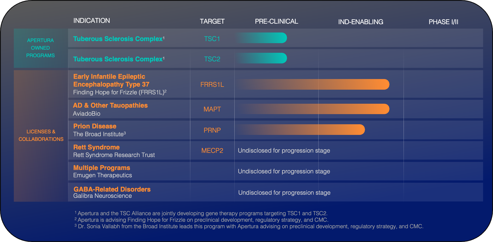

Science · Pipeline
Programs advancing
on TfR1 CapX.
Apertura advances its own tuberous sclerosis complex programs and partners across the life sciences so that more patients can reach a gene therapy sooner.
Development programs
Drug development programs using TfR1 CapX
| Indication | Target | Pre-clinical → IND-enabling → Phase I/II |
|---|---|---|
| Tuberous Sclerosis ComplexApertura · jointly with the TSC Alliance | TSC1 | |
| Tuberous Sclerosis ComplexApertura · jointly with the TSC Alliance | TSC2 | |
| Early Infantile Epileptic Encephalopathy Type 37Finding Hope for Frizzle (FRRS1L) | FRRS1L | |
| Alzheimer's disease & other tauopathiesAviadoBio | MAPT | |
| Prion diseaseThe Broad Institute | PRNP | |
| Rett syndromeRett Syndrome Research Trust | MECP2 | Undisclosed for progression stage |
| Multiple programsEmugen Therapeutics | — | Undisclosed for progression stage |
| GABA-related disordersGalibra Neuroscience | — | Undisclosed for progression stage |
| Friedreich ataxiaLexeo Therapeutics | FXN | Undisclosed for progression stage |
| Angelman syndromeFoundation for Angelman Syndrome Therapeutics | UBE3A | Undisclosed for progression stage |
| Niemann-Pick disease type C1NIH (CRADA) | NPC1 | Undisclosed for progression stage |
Apertura-owned programs
Licenses & collaborations
Apertura and the TSC Alliance are jointly developing gene therapy programs targeting TSC1 and TSC2. Apertura advises Finding Hope for Frizzle on preclinical development, regulatory strategy and CMC. Dr. Sonia Vallabh of the Broad Institute leads the prion disease program, with Apertura advising on preclinical development, regulatory strategy and CMC. Stage bars show relative progression, not calendar time.

Add a program
Have a CNS target that needs a ride across the barrier?
Licensing, collaborations, and no-cost academic access all start with a conversation.